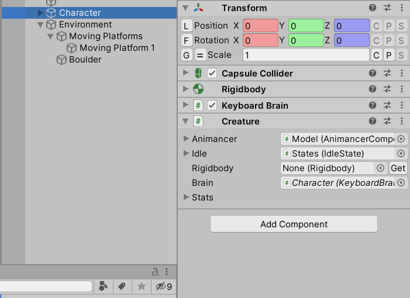

This feature is only available in Inspector Gadgets Pro.
Inspector Gadgets applies various improvements to Object reference fields (any field that inherits from UnityEngine.Object such as any reference to a GameObject, Component, or any asset).
Get Button
Component fields with no reference show a Get button that calls IGUtils.ProgressiveSearch to find an appropriate object based on the name of the field.
Nested Inspector
While a reference is assigned, it will be shown with a foldout arrow to show the referenced object's editor nested below the field.
- Unfortunately, due to the way the nested editor is drawn, arrays and lists of references will draw their editors beneath the list rather than beneath each individual field.
- Some types do not support nesting:
GameObject,AudioClip,Material, andRuntimeAnimatorController. - If you make a custom class, you can add a
private const bool NestedObjectDrawers = false;field to is to disable nested object drawers for it in case they don't fit within the layout of your custom editor.
Drop Component
If you drag and drop a GameObject into a Component field, Unity would normally just assign the first Component of the correct type, but if there is more than one then Inspector Gadgets will instead show a context menu for you to choose which one you want:
Drag Reference
Normally you can only drag and drop references into Object fields, but Inspector Gadgets allows you to drag them out as well:
Context Menus
In addition to the general Context Menu Functions added by Inspector Gadgets, there are several more which are specific to Object fields:
| Function | Effect |
|---|---|
Null |
Sets the field to null. |
Destroy |
Destroys the referenced object. |
Open Inspector |
Opens a new Inspector window to display the selected object's details. |
Find Object of Type |
Calls Resources.FindObjectsOfTypeAll and selects the object with a name closest to the field's display name. |
Find Asset of Type |
Calls IGEditorUtils.FindAssetOfType and selects the asset with a name closest to the field's display name. |
Pick from List |
Gathers all scene objects that could be assigned to the field and display a list to let you choose which one you want. The Pick from Prefabs function will do the same for assets in the project (note that it may take several seconds or more to execute in large projects). Non-Component fields go straight to the assets list.  |
Find Component (Progressive Search) |
Component fields only. Calls IGUtils.ProgressiveSearch and selects the Component with a name closest to the field's display name. |
Add Component |
Component fields only. Adds a Component of the appropriate type to the current GameObject and assigns it to the field. If there are multiple types inheriting from it, this function is displayed with a sub-menu for each of them. |
Create New Instance |
ScriptableObject fields only. Creates a new instance of the appropriate type and assigns it to the field. If there are multiple types inheriting from it, this function is displayed with a sub-menu for each of them. |
Save as Asset |
Opens a window asking where you want to save the referenced object. This is particularly helpful after using Create New Instance to make a ScriptableObject because they are not automatically saved unless referenced by a scene object. |